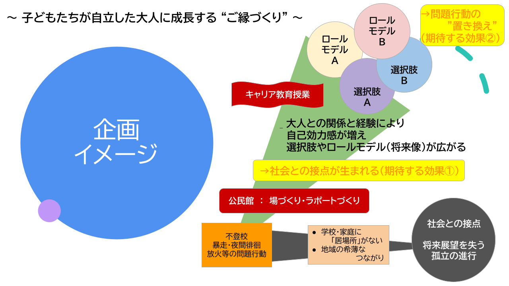

本プロジェクトは、喜名自治会と株式会社琉球のタネが連携し、地域の子どもたちのキャリア教育を推進するものです。学校や家庭に居場所を見つけにくい子どもたちに対し、地域とのつながりを通じて自己肯定感・将来への希望を育み、子どもたちが自立した大人に成長する “ご縁づくり” を目指します。

公民館での学習や食支援を通じて、大人との信頼関係を構築します。
地域の「日常の現場」を訪問・観察し、自己理解を深めます。
個別マッチングによる職場体験を通じて、将来の自分のロールモデルとの"ご縁"をつくります。
費用：保護者500円、支援者1,000円、喜名自治会員無料
主催：喜名自治会
共催：株式会社 琉球のタネ
協力要請機関：読谷村・教育委員会・青少年センター・警察・社会福祉協議会・商工会・福祉農業関係者・PTA・民生委員・ファミリーサポートセンター・村議員 など
| 主体 | 主な役割（依頼） |
|---|---|
| 自治会（事業主催） | 事業決定・予算管理・会場（公民館）提供・地域連携会議主催・広報回覧 |
| 琉球のタネ（運営共催） | プログラム設計・キャリア教育実施・記録・保護者勉強会 |
| 教育委員会 | 学校調整協力・COCOLOプランのアドバイス |
| こども未来課 | 子ども移動費・送迎車両・ファミリーサポートセンター調整 |
| 青少年センター | 運営補助・学校調整補助 |
| 学校（小・中） | 児童情報共有・保護者連絡協力・COCOLOプラン協力 |
| 商工会 | キャリア講師および体験先企業紹介 |
| 民生委員・福祉機関 | 家庭支援および食支援連携 |
| PTA／保護者 | 勉強会参加・子どもの送迎補助・自宅学習サポート |
| 実施内容 | 9月 | 10月 | 11月 | 12月 | 1月 | 2月 | 3月 |
|---|---|---|---|---|---|---|---|
| 事前準備 | → | ||||||
| 4.取組1：関係づくり | 毎週月曜 | → | → | → | → | → | |
| 4.取組2：地域探訪 | 月1〜2回 | → | → | → | → | → | |
| 4.取組3：職場体験 | 状況に応じて 個別実施 |
→ | → | → | → | ||
| 5-①.子育て勉強会（保護者等） | 第1回 | 第2回 | 第3回 | 第4回 | 第5回 | ||
| 5-②.地域連携会議（隔月） | 初回開催 | 第2回 | 第3回 | 第4回 |
※スケジュールは、自治会行事等を優先して調整し、変更する場合もあります。
喜名自治会と株式会社琉球のタネは、本プロジェクトの推進に関する連携協定を締結しています。有効期間は2026年3月31日までです。
学校教育法
コミュニティ・スクールの根拠規定に基づき、自治会と学校が協働で教育活動を推進します。
児童福祉法
子どもの健やかな育成のため、市町村が居場所づくりや学習支援事業を行います。
社会教育法
公民館など社会教育施設の運営や講座開催の基本法です。
教育機会確保法
不登校の児童生徒に対し、学校外の学習支援を後押しします。
障害者差別解消法
障害のある利用者への合理的配慮を求める法です。
子どもの貧困対策の推進に関する法律
経済的に厳しい家庭の子どもへの学習支援や居場所づくりを推進します。
不登校の児童生徒に「休養の必要性」を認め、多様な学習の場や支援を提供する国の新しい不登校対策です。
上記の内容は以下からダウンロードできます。
※PDFファイルは、Adobe Acrobat ReaderなどのPDFビューアで開いてください。
※ファイルのダウンロードには、インターネット接続が必要です。